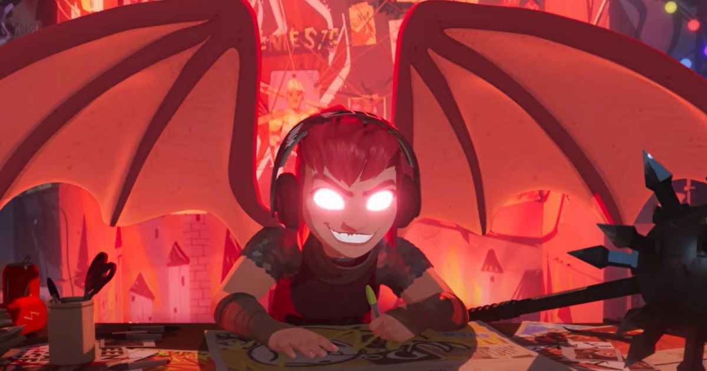
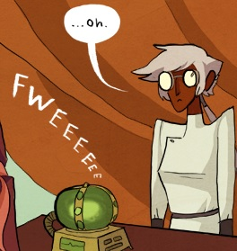

nimona nimona nimona nimona nimona nimona nimona nimona nimona HAVE YOU READ NIMONA? HAVE YOU WATCHED NIMONA CAUSE ITS A MOVIE NOW ON NETFLIX AND YOU SHOULD GO WATCH IT ITS REALLY GOOD I PROMISE
okay but seriously, nimona, where do i begin. the fact that it's first and foremost one of the best graphic novels i've ever read and is pretty much my favourite of all time? its beautifully drawn, /escpecially/ during /those/ scenes at the end (if you've read it you know what i mean). all the characters are all so loveable (except the director (the director can do die)).
nimona (the character and the graphic novel) is the trans agenda. its transgender. the author is literally trans and said so. shes so trans its insane. you could not make a more trans character. the recurring theme in the movie where shes talking about how her shapeshifting is still her i wanted to sob. shes so me.
at like 33 mins in:
Ballister: Can you please just be normal for a second?TRANSGENDERISM. THATS BEING TRANSGENDER BABYYYYYY. TRANS MEDIA HAS PEAKED. WE'VE DONE IT
Nimona: Normal?
Ballister: I just think it'd be easier if you were a girl
Nimona: Easier to be a girl? You're hilarious
Ballister: I mean, easier if you look human
Nimona: Easier for who?
Ballister: For you. A lot of people aren't as accepting as me
Nimona: Mm-hmm?
Ballister: How did you get like this?
Nimona: What? You mean awesome?
Ballister: No, how do you-- I'm just trying to understand what I'm working with here
Nimona: I'm Nimona
i could not tell you when i first read niomna but ive been waiting for this movie for at least several years now and it delivered on every front. i was so fucking happy watching it
a moment of silence for ambrosius' long hair though. you're greatly missed and i will forever curse how it didn't work out

sobbing over how blitzmeyer didnt make it to the movie version </33333 she was my fav
